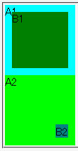

2002-10-14修正。
leftおよびtopプロパティが指定された要素では、rightおよびbottomプロパティの指定が無視される。
<div style="position:relative; width:100px; height:100px; background:aqua;">A1 <div style="position:absolute; left:10px; top:10px; right:10px; bottom:10px; background:green;">B1</div> </div> <div style="position:relative; width:100px; height:100px; background:lime;">A2 <div style="position:absolute; right:10px; bottom:10px; background:teal;">B2</div> </div>
A1, B1はleft, top, right, bottomをすべて指定したもの、A2, B2はright, bottomだけを指定したものです。
Moz1.0での表示（標準モード）
WinIE6.0での表示（標準モード）
WinIE6.0では標準・互換の両モードで不具合の発生が確認されました。